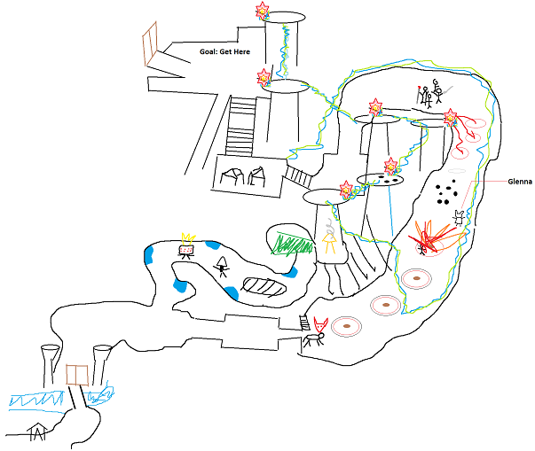

Siege the Stronghold (Escort)
Основная информация
Здесь цель состоит в том, чтобы сопроводить асуру по имени Glenna к внутренним воротам крепости. Бóльшую часть эскорта рейд работает в двух группах: одна группа на башнях, вторая сопровождает асуру. Группа на башнях позволяет эскорту продвигаться дальше и наоборот.
Требования по Mastery: Ley Line Gliding (для группы на башнях), Forsaken Thicket Waters (для выживания в пещере)
Механики
Начальные механики
После запуска эскорта у каждого игрока появится special action skill, позволяющий подозвать асуру на свою текущую позицию. Для этого назначается конкретный игрок. На протяжении всего эскорта хотя бы один должен находиться в пределах 800 метров от асуры. Если этого не соблюдается, то через 15 секунд Glenna будет убита White Mantle Seekers. Если Glenna умирает, это вайп, поэтому важно, чтобы назначенный игрок следил за её полоской здоровья.
Первым препятствием будет опущенный подъемный мост. Здесь есть небольшой трюк, как сэкономить время. Сразу, как все получают special action, можно написать gg, и в слдующий раз мост будет уже поднят.
Если делать это обычным путем, нужно подозвать асуру в белый круг около края моста. Как только Glenna встанет в этот круг, она произнесет заклинание, появится лей-линия. Игроки, перелетевшие по ней, могут нажать на рычаг слева и поднять мост. В следующем белом круге Glenna взрывает ворота. Осторожнее со взрывом, потому что он положит всех игроков в downstate в пределах своего АоЕ. После уничтожения ворот появляется небольшой отряд White Mantle. Затем рейд делится на две группы.
Полезный совет
Поскольку в пещере мобы очень злые, есть большой риск того, что люди, бегущие за первым игроком, будут убиты. Поэтому многие группы отправляют в пещеру только месмера с порталом, который поднимает группу сразу к Bouncing Mushroom около первой башни.
Группа на башнях
Во всей пещере к игрокам применяется постоянный дебафф Toxic Spores, который можно снять, только зайдя в воду. Для этого нужно иметь Forsaken Thicket Waters Mastery.
На каждой башне стоит отряд White Mantle. Как только число игроков становится больше числа мобов, башня считается захваченной. Как только весь отряд White Mantle будет убит, через некоторое время появляется ещё один в попытках восстановить конроль над башней, поэтому рекомендуется оставлять хотя бы одного моба в живых до следующей башни.
Эскорт-группа
Пока верхняя группа (или месмер) проходит через пещеру, нижняя группа продолжает двигаться вперед и убивать отряды White Mantle. Здесь группа сталкивается с минами. Если игрок или Glenna заходит в красных круг, это мгновенная смерть. Однако, если стоять между белым и красным кругами, мина становится активной, и её можно убить любой атакой с расстояния.
В зависимости от скорости каждой группы, возможно, нижней группе нужно будет стоять за пределами диапазона башни и ждать, пока верхняя группа захватит первую башню.
Башня захвачена
В этот момент происходит сразу несколько событий. В начале и в конце появляются Warg Bloodhoung, котоорые игнорируют всех игроков и направляются прямо к асуре. Wargs невосприимчивы к hard cc, но восприимчивы к soft cc (chilled, immobilize, cripple…). Одного удара Warg достаточно, чтобы убить асуру, поэтому здесь очень важно держать НПС на расстоянии.
Кроме того, после захвата башни появляется возможность провести асуру на следующий белый круг. Для верхней группы появляется следующая лей-линия.
Как только все 5 башен захвачены (на последней убить всех мобов), у дверей появляется McLeod The Silent.
McLeod The Silent
Одна из его основных механик – телепортироваться к самому дальнему игроку рейда, поэтому он может сразу прыгнуть на последнюю башню, пока игроки с неё улетают. Если это происходит, надо просто подождать, пока он прыгнет обратно.
Здесь нужно иметь в виду, что Glenna больше не нуждается в защите, поэтому её можно оставить на месте последнего круга, а всему рейду рекомендуется перебраться к воротам.
У самого босса есть три механики. Его основная атака напоминает Blurred Frenzy у месмера и вешает confusion на игроков.
На 75%, 50% и 25% McLeod делится на двух клонов с красной и белой метками. В этот момент на игроков вешаются такие же метки. Каждый моб может быть повреждён только игроками той же метки.
В тот момент, когда клоны убиты, возвращается босс и вызывает Warg из ворот, такого же, как были во время эскорта. Важно быстро убить его, поэтому удобно стоять около дверей.
После убийства McLeod’a игроки приводят асуру в последний белый круг. Когда она взрывает ворота, эскорт сделан.